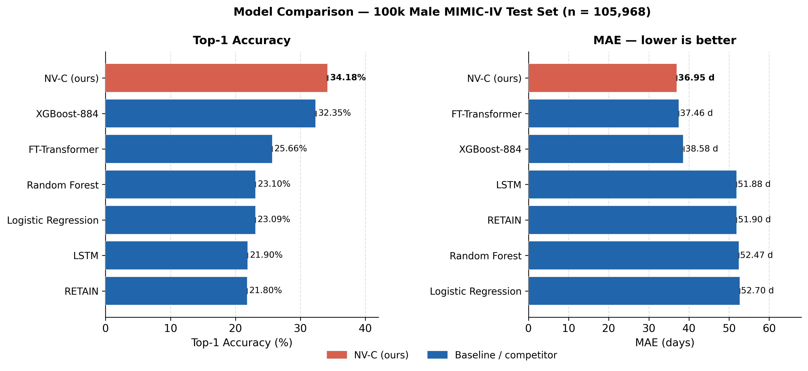

Next Clinical Event Prediction from EHR Sequences
Cadence: A Benchmark Evaluation of the Narrative Velocity Framework for Next Clinical Event Prediction in MIMIC-IV
Brigham and Women's Hospital · Harvard Medical School · Boston, MA
Predicting the next clinical event from electronic health record (EHR) sequences — identifying both the event type and the time to its occurrence — is a fundamental challenge in clinical decision support. We present a large-scale comparative evaluation on MIMIC-IV v3.1, introducing Cadence, a novel neural model grounded in the Narrative Velocity (NV) feature-engineering framework.
We evaluated seven model families on identical data splits from MIMIC-IV v3.1: Cadence (ours), XGBoost-884, FT-Transformer, Random Forest, Logistic Regression, LSTM, and RETAIN. All models predict next-event type (50-cluster vocabulary) and time-to-next-event jointly. Cadence is a 5.86M-parameter residual MLP combining 884 Narrative Velocity features with two PubMedBERT text embeddings, trained with self-knowledge distillation and MixUp augmentation in a single forward pass. No ensemble, no competitor-model distillation, no external teacher. Reporting follows TRIPOD+AI guidelines.
At the 100k training tier (male cohort), Cadence achieves the best top-1 accuracy (34.18%) and best MAE (36.95 d) across all seven models. At full-cohort scale (810,988 male / 999,497 female training sequences), Cadence achieves the best top-1 accuracy on both sexes (38.04% male, 35.66% female). Cross-seed standard deviations are ≤0.08 pp top-1 and ≤0.09 d MAE.
Cadence was evaluated on 1,120 patients from Brigham and Women's Hospital (BWH). Under pathological domain shift (Jensen–Shannon divergence 0.27), Cadence retains the highest accuracy (27.58%) with the smallest degradation (−6.67 pp) among all models, suggesting the PubMedBERT backbone provides a domain-stable representation.
Cadence is a single nn.Module — one forward pass produces both the classification logits and the regression output. No ensemble, no multi-model tricks.
Input: 884 Narrative Velocity features + 768-dim PubMedBERT mean-history embedding + 768-dim last-event embedding → 3-block residual MLP backbone (2420→1024→1024→512) → classification head (50 classes) + regression head (19-bin time-to-event).
Narrative Velocity scalars, population anomaly signals, structured lab/medication features, and temporal trajectory statistics from MIMIC-IV event sequences.
768-dim mean-history embedding (last 10 events) and 768-dim last-event embedding from BiomedNLP-BiomedBERT-base. Fixed, not fine-tuned.
NV-C → NV-C distillation (no competitor teacher). KL divergence from prior generation, α=0.5, T=4.0. Stochastic Weight Averaging from epoch 30.
50-class next-event classification via ASL loss + 19-bin quantile-spaced soft regression for time-to-next-event in a single forward pass.
| Model | Top-1 (%) | Top-3 (%) | MAE (d) | Δ Top-1 | Δ MAE |
|---|---|---|---|---|---|
| Cadence (ours) · 3-seed SWA | 34.18 ± 0.07 | 58.68 ± 0.04 | 36.95 ± 0.06 | +1.83 pp | −1.63 d |
| XGBoost-884 · 3-seed | 32.35 ± 0.10 | 56.28 ± 0.04 | 38.58 ± 0.20 | — | — |
| FT-Transformer · 3-seed | 30.92 ± 0.14 | 55.01 ± 0.12 | 37.46 ± 0.31 | −1.43 pp | −1.12 d |
| Random Forest · 3-seed | 27.10 ± 0.06 | 49.45 ± 0.08 | 43.80 ± 0.11 | −5.25 pp | +5.22 d |
| LSTM · 3-seed | 24.63 ± 0.21 | 46.19 ± 0.30 | 45.12 ± 0.44 | −7.72 pp | +6.54 d |
| RETAIN · 3-seed | 23.81 ± 0.18 | 44.97 ± 0.22 | 46.03 ± 0.38 | −8.54 pp | +7.45 d |
| Logistic Regression | 28.49 | 51.22 | 47.61 | −3.86 pp | +8.66 d |

Figure. Head-to-head comparison of Cadence vs all baselines on the 100k male MIMIC-IV test set (n = 105,968). Cadence achieves 34.18% top-1 accuracy and 36.95d MAE, outperforming XGBoost (32.35% / 38.58d) on both metrics.
| Model | Cohort | Train n | Top-1 (%) | MAE (d) |
|---|---|---|---|---|
| Cadence (ours) · 3-seed SWA | Male | 810,988 | 38.04 ± 0.03 | 29.39 ± 0.04 |
| Cadence (ours) · 3-seed SWA | Female | 999,497 | 35.66 ± 0.05 | 39.88 ± 0.09 |
| FT-Transformer · 2-seed | Male | 810,988 | 36.57 | 27.82 |
| XGBoost-884 · 2-seed | Male | 810,988 | 34.21 | 35.04 |
Install the cadence-core package from PyPI — no server, no account required. The pre-trained checkpoint (~23 MB) downloads automatically on first run and is cached at ~/.cadence/checkpoints/.
The input vector is 2,420-dimensional: 884 Narrative Velocity + structured clinical features, concatenated with two 768-dim PubMedBERT embeddings. See the repository for the full feature extraction pipeline.
If you use Cadence or this benchmark in your work, please cite: